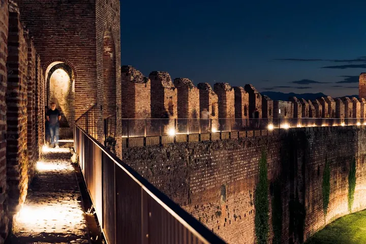

da lun 10 ago a sab 31 ott
Camminamento di Ronda By Night
La passeggiata comincia dalla Casa del Capitano nel complesso di Porta Bassano, si prosegue in direzione ovest verso Porta Vicenza. Si continua la passeggiata entrando nella famosa Torre di Malta a Porta Padova. Si riparte per la seconda metà della visita incontrando Porta…
 Indicazioni
Indicazioni
- Costi e prenotazioni
- Costo non indicato · Prenotazione non indicata
- Programma
- Programma da verificare. Apri la fonte ufficiale per orari e possibili aggiornamenti.
- In caso di maltempo
- Nessuna indicazione specifica pubblicata.
- Note
- Acquisito automaticamente dalla fonte.
L’EVENTO
Descrizione completa
La passeggiata comincia dalla Casa del Capitano nel complesso di Porta Bassano, si prosegue in direzione ovest verso Porta Vicenza. Si continua la passeggiata entrando nella famosa Torre di Malta a Porta Padova. Si riparte per la seconda metà della visita incontrando Porta Treviso e infine di nuovo Porta Bassano.
Un evento per chi è appassionato di fotografia, chi desidera fare una sorpresa romantica o chi semplicemente è appassionato di medioevo, ma anche chi ha già visitato il Camminamento di giorno ma vuole farne esperienza anche in un'atmosfera diversa.
Cittadella come città murata nasce nel 1220 da un progetto militare di Padova, la quale ne promosse la fondazione per difendersi da Treviso, per scalzare i privilegi dell'aristocrazia locale e creare un grosso centro amministrativo a nord della città madre. Successivamente Cittadella fu dominata anche da Ezzelino da Romano (1237-1252), da Cangrande della Scala (1318-1337) e, dopo essere tornata sotto il dominio padovano per 68 anni, nel 1405 passò spontaneamente sotto dominio veneziano.
Oggi il Camminamento di Ronda è completo e restaurato nella sua interezza. E' lungo 1660 metri ed è l'unica cinta medievale completamente percorribile in Europa di forma ellittica. Il restauro è di tipo conservativo ed è durato quasi vent'anni.
IL PROGRAMMA
Programma e orari
Appuntamenti raccolti dalle fonti elencate. Dove manca un orario, non è ancora disponibile in questa scheda.
Programma pubblicato
- 2026-08-10 — 2026-08-10 · 21:00:00
- 2026-10-24 — 2026-10-24 · 21:00:00
- 2026-10-25 — 2026-10-25 · 17:00:00
- 2026-10-31 — 2026-10-31 · 17:00:00
INFORMAZIONI UTILI
Prima di partire
- Controllare la fonte prima di partire.
ORGANIZZAZIONE